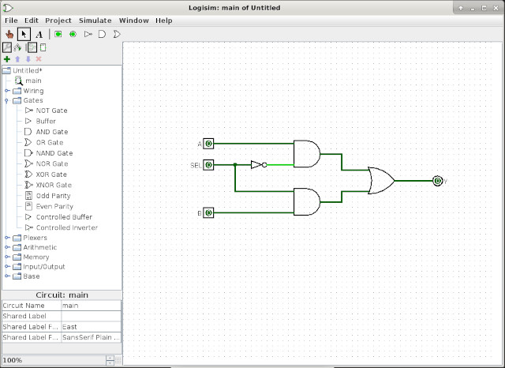
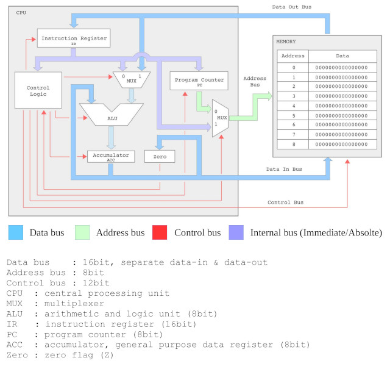
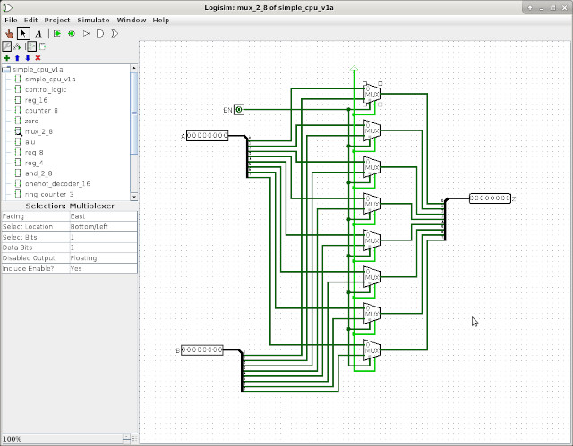
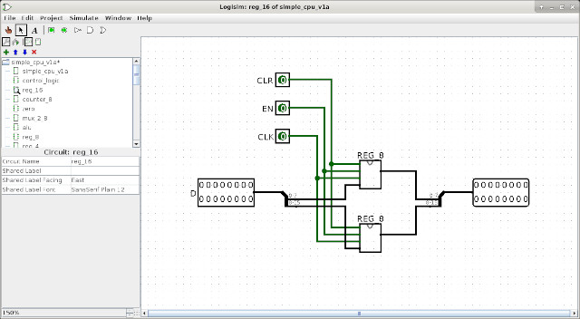
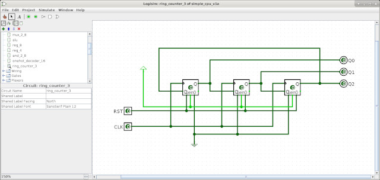
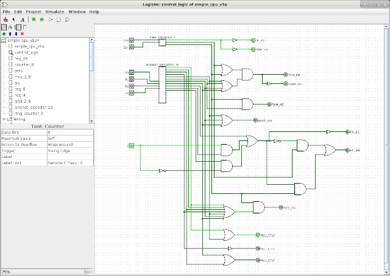
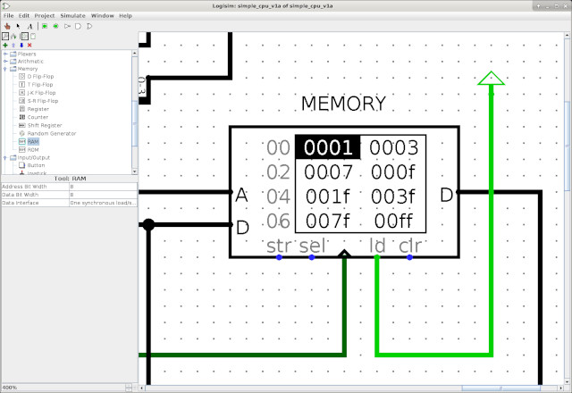
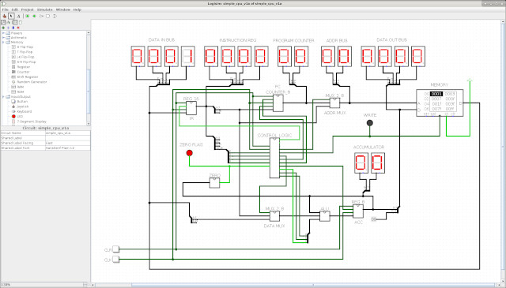

Logisim simpleCPUv1a
A teaching guide to visualising how a processor works through the fetch, decode, execute cycle and the underlying hardware that makes it possible.
To understand how a processor works, it helps to visualise the internal operations behind the fetch, decode and execute phases, and to see how data moves through the hardware as an instruction is executed. One way to do this is with lots of LEDs, as seen in the breadboard version of the SimpleCPUv1a: Link.
Although this approach is informative, it is not always reliable or practical because wires can loosen over time. Fortunately, open-source digital logic tools make it easier to model and observe hardware behaviour in a controlled environment. One of the most popular tools for teaching digital logic is Logisim: Logisim, and the updated version Logisim-evolution: Logisim-evolution.
These tools are designed for education and help students observe how signals change as a circuit runs. This is different from industrial tools such as Xilinx ISE, which are more suitable for timing-sensitive and hardware-implementation work. Those tools are excellent for FPGA design, but they are more complex and less suited to early teaching of the basics.
“Logisim is an educational tool for designing and simulating digital logic circuits. With its simple toolbar interface and simulation of circuits as you build them, it is simple enough to facilitate learning the most basic concepts related to logic circuits. With the capacity to build larger circuits from smaller subcircuits, and to draw bundles of wires with a single mouse drag, Logisim can be used (and is used) to design and simulate entire CPUs for educational purposes.”
That is why this project explores Logisim as a teaching aid for building a simple CPU model. The original version was chosen because it was simpler to install, and it remains a useful starting point. The result is the Logisim simpleCPUv1a, which you can download here: simple_cpu_v1a.html. The test program used to initialise its memory can also be downloaded here: data.html.


Software
To install Logisim on Linux (for example, on Linux Mint), the process is straightforward:
sudo apt-get install logisim
A major advantage of Logisim is the strong online community around it. It is used in many schools and universities, which means there are examples, tutorials, and advice available for most common questions. There are also plenty of YouTube video tutorials, so the learning curve is relatively short.
Still, there are a few practical things that are easy to miss when first learning the tool:
- Zoom controls are not in a normal menu; they are usually located at the lower left and are operated using up/down buttons.
- Buses are not represented by a dedicated bus tool in the same way as some other tools. Instead, the Splitter component is used to separate and combine bits.
- Moving wires and buses can be awkward until you learn that clicking a wire segment selects it, and then dragging it to a new position works well. Selected segments can also be deleted with the Delete key.
- Pin order matters. The vertical order of pins in a circuit determines how they appear on the corresponding component.
- Unconnected pins behave as floating low, which is convenient for drawing but not good practice in real hardware. In the real world, unused inputs should be tied to a defined level.
- Traversing circuit hierarchy is not always as smooth as with other tools, so it may take some getting used to.
- Documentation is available through the Help menu, which is easy to overlook.
- Simulation is visual rather than waveform-based. Signals change colour as logic values change, and buses can be inspected by clicking them or adding displays such as 7-segment outputs.
For teaching simple circuits such as the simpleCPUv1a, Logisim is a strong choice because it gives a clear overview of hardware state. Students can see which signals are active on each clock cycle. For larger systems or long-running simulations, however, a more advanced tool may be preferable.
SimpleCPU version 1a


This Logisim implementation follows the same basic design philosophy as the earlier Xilinx work. The functionality is broken into reusable sub-components which are then assembled into larger building blocks, which in turn form the processor architecture shown in figure 2.
Multiplexers


Rather than building this component from basic logic gates such as AND, OR and NOT, I decided to implement it as a separate circuit using the predefined bit multiplexer. Logisim also allows a user to customise the built-in multiplexer primitive, but using a circuit helped with understanding how buses are split into bits and reassembled.
Arithmetic and Logic Unit

A small deviation from the original design can be seen in figure 4. Logisim supports primitive ADD and SUB components, which were used to save time instead of drawing a separate ADDSUB circuit using half-adders and full-adders. The bitwise-AND component was still implemented directly, as shown in figure 5.

Registers and ring counter



The same general approach used in the FPGA implementation was adopted here: build a 4-bit register from D-type flip-flops, then use it to create the 8-bit and 16-bit registers shown in figures 6 through 8. While the built-in Logisim register component would have been simpler, using the explicit flip-flop design emphasises the concept of reusable hardware building blocks.

The program counter and ring counter are also based on the same design ideas used in the FPGA implementation. The PC again uses the built-in ADD component. Logisim supports a primitive binary counter, but it is not as easily configured for the loadable counter behaviour needed here.


Control logic


The control logic resembles the FPGA version, but a redundant section was removed during the Logisim implementation. The one-hot decoder and zero-detect logic remain essentially the same.


Memory


This part of the design could have been more complex, but Logisim supports dual-port memory, which avoids the need for tri-state buffer arrangements. After reading the documentation and clarifying the role of the control pins, the memory interface was straightforward to use.
To initialise the memory, a text file can be loaded by right-clicking the memory block and selecting Load image. The file format is a simple sequential list of values, starting at address 0.
v2.0 raw 0001 0003 0007 000F 001F 003F 007F 00FF 1001 1003 ... 705E 3000 904B 00FF 1001 A04E 00FF 3000 A051 8052 00FF 1001
To generate the machine code, a small shell script can be used to transform an object file format into the raw memory contents expected by Logisim.
#!/bin/sh echo "v2.0 raw" > data cat code.mem | while read line do data=`echo $line | cut -d' ' -f2 | rev` echo $data >> data done
Computer and testing


Initially, the CPU and memory were placed in separate top-level circuits, which made it difficult to see the buses and data flow during simulation. Moving the memory into the same circuit as the processor made the visualisation much clearer. The design was also enhanced with LEDs to make state changes more obvious.
To test the model, the normal program sequence was used, as shown below. Watch the Logisim simulation video from the project files.
# JUMPU 1 0 0 0 X X X X A A A A A A A A # JUMPZ 1 0 0 1 X X X X A A A A A A A A # JUMPNZ 1 0 1 0 X X X X A A A A A A A A # JUMPC 1 0 1 1 X X X X A A A A A A A A start: move 1 move 3 move 7 move 15 move 31 move 63 move 127 move 255 add 1 add 3 add 7 add 15 add 31 add 63 add 127 add 255 sub 1 sub 3 sub 7 sub 15 sub 31 sub 63 sub 127 sub 255 and 255 and 127 and 63 and 31 and 15 and 7 and 3 and 1 move 1 store A move 3 store B move 7 store C move 15 store D move 31 store E move 63 store F move 127 store G move 255 store H load A load B load C load D load E load F load G load H addm A addm B addm C addm D addm E addm F addm G addm H subm A subm B subm C subm D subm E subm F subm G subm H and 0 jumpz b1 move 255 b1: add 1 jumpnz b2 move 255 b2: and 0 jumpnz b3 jumpu b4 b3: move 255 b4: add 1 jumpz b5 jumpu b6 b5: move 255 b6: jumpu start A: .data 0 B: .data 0 C: .data 0 D: .data 0 E: .data 0 F: .data 0 G: .data 0 H: .data 0
WORK IN PROGRESS